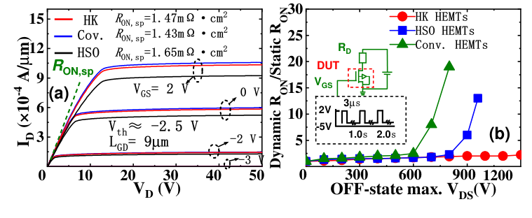

Research
Research
My research connects learning and temporal representations in spiking networks with structure in complex signals and the physical constraints of devices.
Spiking Learning & Temporal Computing
How can discrete spikes preserve useful evidence within a short horizon while supporting stable gradients? This connects training dynamics, temporal representations, and computational cost.
I study gradient propagation through the alignment of membrane-potential distributions and surrogate functions, and organize continuous signals through multi-scale temporal and sparse transform encoding under matched comparisons.

MTE×STE Encoding Framework
Original Figure 2: continuous signals, multi-scale streams, plug-in STE, and classification readout.
Source: Proceedings of the 43rd International Conference on Machine Learning, 306, 116587-116606 (2026). © 2026 the authors.
View full-size figurePublished evidence
Radar & Intelligent Signal Processing
How can emitter structure be recovered when pulse streams overlap, noise grows, or labels are scarce, while retaining representations useful for denoising and recognition?
Self-organizing competitive learning provides an unsupervised route; similarity structure and pseudo-labels support cluster decisions, while similarity-guided temporal encoding connects radar inputs to SNNs. Related applications extend to remote sensing and multimodal sensing.

Spiking SOM Deinterleaving Framework
The framework shows how BMU competition, spike responses and cluster updates form an unsupervised radar-pulse deinterleaving process.
Source: ICASSP 2026 - 2026 IEEE International Conference on Acoustics, Speech and Signal Processing (ICASSP), 19532-19536 (2026). © 2026 IEEE.
View full-size figurePublished evidence
- Spiking Self-Organizing Maps with Convergence Guarantees for Unsupervised Radar Signal DeinterleavingICASSP 2026 · CCF-B · Oral
- SGTE-SNN: Similarity-Guided Temporal Encoding for Radar Emitter Denoising and RecognitionICASSP 2026 · CCF-B
- Adaptive Clustering With Similarity Learning for Enhanced Multi-Scenario Radar Signal ProcessingIEEE Signal Processing Letters · 2025
Semiconductor Devices & Neuromorphic Hardware
How do device geometry, boundary conditions, and model fidelity shape electrical behavior, and how can device models connect with neuron dynamics and system constraints in neuromorphic computing?
Semiconductor Device Design & Modeling
Published work in APL, IEEE TED, and Micromachines studies power-device structures, field management, and ML-assisted modeling, relating device geometry and model predictions to TCAD analyses and the device evaluations reported in those papers.
Neuromorphic Devices & Cross-layer Design
Current interests concern neuromorphic device models, neuron-array modeling, and cross-layer design: how device behavior connects to algorithmic and hardware constraints. The power-device papers provide a device-research foundation, not evidence of a fabricated or system-validated neuromorphic chip.

Device Structure and Microscopy
Original Figure 1: conventional and PZT-trench cross sections with microscopy of the fabricated structure.
Source: Applied Physics Letters, 129(17), 173502 (2026). Figures from the author-supplied accepted manuscript.
View full-size figure
Static and Dynamic Conduction
Original Figure 5: output characteristics, specific ON-resistance, and dynamic-to-static resistance ratios.
Source: Applied Physics Letters, 129(17), 173502 (2026). Figures from the author-supplied accepted manuscript.
View full-size figurePublished evidence
- Electric-field redistribution via high-k dielectric trench in GaN-on-Si AlGaN/GaN HEMTsApplied Physics Letters · 2026
- Machine Learning-Based Modeling and BV Optimization for LDMOS With Multifloating Buried LayersIEEE Transactions on Electron Devices · 2025
- Machine Learning-Based Figure of Merit Model of SIPOS Modulated Drift Region for U-MOSFETMicromachines · 2024
- A TCAD Study on High-Voltage Superjunction LDMOS with Variable-K Dielectric TrenchMicromachines · 2022